UD5. Introducció a Java
1. La plataforma Java
1.1. Introducció
Java és un llenguatge de programació de propòsit general i, per tant, adequat per a fer qualsevol tipus d'aplicació professional.
Però no és un llenguatge més, sinó que té una série de característiques que el fan únic i és usat per molts fabricants per a desenvolupar aplicacios comercials de gran repercusió.
En este tema vorem les principals característiques de Java, com s'instal·la l'aplicació per a començar a treballar i quina és l'estructura bàsica d'un programa Java.
Què es pot programar amb Java?
No és cert que Java només servisca per a programar applets per a pàgines web ja que Java és un llenguatge de propòsit general:
- Aplicacions independents. Igual que qualsevol altre llenguatge de propòsit general.
- Applets. Són xicotetes aplicacions en Java incrustades en un document HTML i que, per tant, s'executen en l'entorn d'un navegador, en l'ordinador local.
Característiques de Java
Una de les característiques més importants és que els programes executables (creats pel compilador de Java) són independents de l’arquitectura. És a dir: s’executen en una gran varietat d’equips amb diferents microprocessadors i sistemes operatius. Per exemple, un programa en Java compilat pot ser executat directament en un PC amb Windows o bé en un Mac amb Linux, etc, cosa que no ocorre per exemple en un programa en C, que ha de ser compilat en cada arquitectura distinta.
Altres característiques:
- És gratuït
- Permet escriure applets
- És fàcil d'aprendre i està ben estructurat
- És "Orientat a Objectes"
- Permet executar tasques concurrents dins d'un mateix programa
Què necessitem per a programar en Java?
Per a treballar amb Java utilitzarem 3 elements:
- La JVM (Java Virtual Machine) --> Per executar programes Java
- El JDK (Java Development Kit) --> Per a programar en Java
- El IDE (IntelliJ, Netbeans...) --> Facilita la tasca de programar
Anem a vore cadascun d'eixos elements.
1.2. La JVM (Màquina Virtual Java)
Java és un llenguatge interpretat però necessita una compilació prèvia.
graph TD
A["Codi font (.java)"] -->|"Compilació (javac)"| B["Bytecode (.class)"]
B --> PC1
B --> PC2
B --> PC3
subgraph PC1
JVM1 --- Exec1[Codi Màquina 1]
end
subgraph PC2
JVM2 --> Exec2[Codi Màquina 2]
end
subgraph PC3
JVM3 --> Exec3[Codi Màquina 3]
endUna volta compilat el programa, es crea un fitxer que guarda el que s'anomena bytecodes o j_codes (pseudocodi pràcticament al nivell de codi màquina). Per a executar-lo cal un intèrpret: la JVM (Java Virtual Machine) o Màquina Virtual de Java.
D'esta forma, és possible compilar el programa en Linux i executar-lo en altra amb Windows usant la màquina virtual Java per a eixa versió de Windows. Esta JVM s'encarrega de llegir els bytecodes i traduir-los a instruccions executables directament en un determinat microprocessador, de forma eficient. Esta idea de màquina virtual fa que els programes siguen independents de la plataforma (Hw + SO) en la qual vaja a executar-se.
Encara que s'haja d'interpretar, la velocitatd'execució no és lenta ja que la interpretació es fa pràcticament al nivell de codi màquina. Per exemple, és molt més ràpid que un llenguatge interpretat com Visual Basic, encara que és més lent que si està escrit en un llenguatge compilat com C++.
Les JVM no ocupen molt d'espai en memòria (van ser dissenyades per a executar-se en xicotets electrodomèstics, com ara telèfons, televisors...).
Les JVM també s'anomenen JRE (Java Runtime Environment: Entorn en temps d'execució de Java).
1.3. El JDK (Java Development Kit)
L'eina bàsica per a començar a desenvolupar aplicacions en Java és el JDK (Java Development Kit) o Kit de Desenvolupament de Java (També anomenant plataforma).
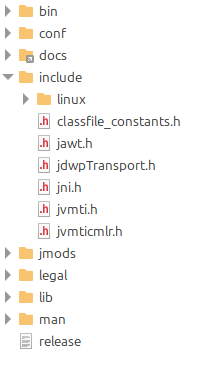
Entre altres coses, el JDK conté:
- El compilador --> javac.exe
- L'intèrpret (la màquina virtual) --> java.exe
- El generador de documentació --> javadoc.exe
- El depurador --> jdb.exe
- El visualitzador d'applets --> appletviewer.exe
El JDK és un fitxer executable que fa la instal·lació i crea tota l'estructura de directoris.
Alguns dels directoris són:
- Bin: fitxers executables: javac, jdb, java, appletviewer...
- Include: capçaleres per a utilitzar funcions escrites en C.
- Lib: llibreries de classes proporcionades pel llenguatge. Estan comprimides en el fitxer classes.zip (però no s'ha de descomprimir).
1.4. L'IDE (IntelliJ)
El JDK funciona a base de comandaments: hem de fer el programa en un editor de text i després compilar-lo i executar-lo des de consola:
nano Hola.javajavac Holajava Hola
És a dir, el JDK no disposa d’un IDE. Un IDE o Entorn de Desenvolupament Integrat és una eina per a fer-nos més fàcil i agradable la tasca de desenvolupar programes mitjançant una interfície gràfica. És com, per exemple, el Visual Studio Code per a Python. Els IDE de Java més importants són Netbeans, Eclipse i IntelliJ. Nosaltres utilitzarem el IntelliJ IDEA Community Edition.
1.4.1. Què és IntelliJ i quines versions té?
IntelliJ IDEA és un entorn de desenvolupament integrat (IDE) per a Java desenvolupat per JetBrains. És conegut per les seues potents eines de desenvolupament, la seua interfície d'usuari intuïtiva i les seues capacitats avançades de refactorització de codi. IntelliJ IDEA està disponible en dues versions:
- Community Edition: Gratuïta i de codi obert, adequada per a desenvolupament de Java SE, Groovy, Scala i Android.
- Ultimate Edition: De pagament, amb funcionalitats addicionals per a desenvolupament web, empresarial i de bases de dades.
Es pot poden descarregar aquestes versions des d'ací:
https://www.jetbrains.com/idea/download/other.html
1.4.1.1. Instal·lació mitjançant JetBrains Toolbox
JetBrains Toolbox és una aplicació que facilita la gestió i instal·lació dels productes JetBrains, incloent IntelliJ IDEA. Amb Toolbox, pots instal·lar, actualitzar i gestionar múltiples versions dels IDEs de JetBrains de manera senzilla:
- Descarrega JetBrains Toolbox des del lloc web oficial de JetBrains.
- Executa l'instal·lador i segueix les instruccions per a completar la instal·lació.
- Inicia JetBrains Toolbox i selecciona IntelliJ IDEA Community Edition de la llista de productes disponibles.
- Fes clic a "Install" per a instal·lar IntelliJ IDEA Community Edition.
Amb JetBrains Toolbox, també pots gestionar les actualitzacions i configurar diferents entorns de desenvolupament de manera eficient.
1.4.2. Iniciem IntelliJ IDEA Community Edition
En Python només treballàvem amb un fitxer. Ací crearem un projecte (serà un directori amb distints subdirectoris i fitxers).
La primera vegada que iniciem IntelliJ, com no tenim cap projecte creat, ens apareixerà la següent finestra:
Si ja tenim algun projecte creat, ens obrirà l'últim amb el qual estàvem treballant. Per crear un nou projecte haurem de seguir els següents passos: File -> New -> Project.... En qualsevol cas, la finestra de creació de projectes és aquesta:
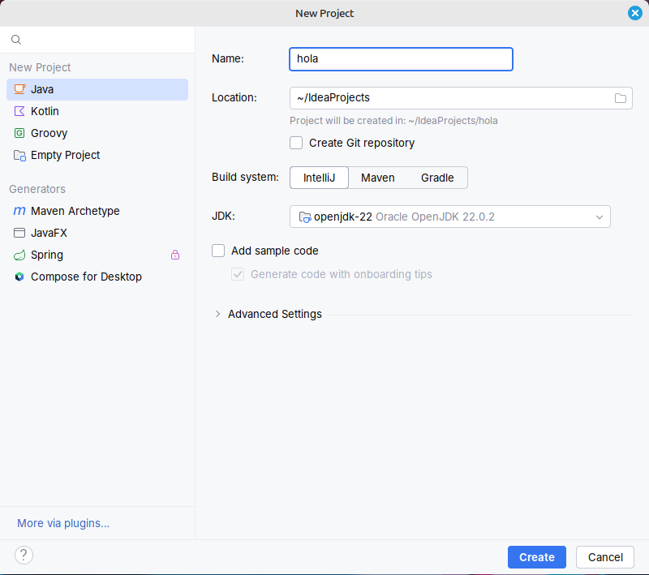
Ací, haurem d'escollir:
- Projecte de JAVA (menú de l'esquerre)
- Escollir un nom per al projecte (Name)
- Escollir un sistema de contrucció (Build System): si no es diu el contrari triarem sempre el propi de l'IDE (IntelliJ).
- Podem escollir el JDK amb el qual funcionarà el projecte: podem deixar-ho per defecte (openjdk-22). EL propi IDE s'encarregarà de descarregar el JDK escollit.
- Recomanem desmarcar l'opció d'afegir codi d'exemple (Add sample code)
Finalment, després de clicar al botó Create es generarà el projecte i, si no tenim el JDK instal·lat es descarregarà (pot tardar un segons la primera vegada).
A partir d'ara, haurem de crear els nostres programes (Classes) a la carpeta src del projecte.
1.4.3. Estructura d'un programa en Java
Anem a fer el nostre primer programa en Java. Només ha de fer un cosa: traure per pantalla el text "Hola, món!".
Si no el tenim ja, crearem el projecte hola com hem vist abans i sobre el directori src farem clic dret per crear una nova classe:
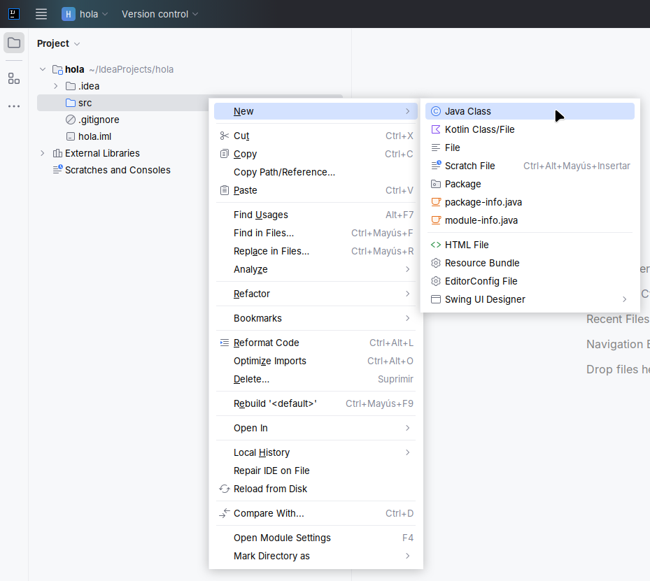
Escriurem el nom Hola d'aquesta (Per convenció, les Classes en Java han de començar en majúscules, encara que no és obligatori):
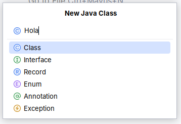
El fitxer que tindrà el nostre programa s'anomenarà Hola.java i estarà en ~IdeaProjects/hola/src/Hola.java
En eixe fitxer (Hola.java) escrivim el nostre programa:
| Java | |
|---|---|
- La classe principal: Java és un llenguatge de programació d'objectes. Això implica que el programa estiga inclòs en el que s'anomena classe. Tots els programes han de tindre almenys una classe, la principal, que es dirà igual que el fitxer font (en majúscula).
- El mètode principal: Eixa classe ha de tindre almenys una funció o mètode, que sempre es dirà main en (minúscula).
- El cos del programa: Dins del main posarem el propi codi del programa, és a dir, les instruccions necessàries per a portar a terme la resolució del nostre problema.
Estos conceptes (clases i objectes) els estudiarem més endavant. De moment, és suficient dir que si el programa que estic fent es diu Hola.java, s'ha de crear una classe pública amb el mateix nom Hola. Compte amb les majúscules, ja que Java també és case-sensitive.
A la primera línia podem veure la classe que es crea (i es tanca a l'última línia):
Després podem observar una sèrie de comentaris que hi ha al programa. Igual que en Python, poden ser d'una línia amb //, o de diverses línies amb /* i */. El cas del comentari que comença amb /** també l'estudiarem més endavant.
Per començar a executar-se qualsevol programa, necessita una porta d'entrada. En Java podem tindre diversos fitxers *.java, però només un d'ells contindrà la classe pública i, a més, contindrà el mètode main(). Este mètode sempre l'escriurem així:
A la línia 8 tenim la instrucció per a mostrar per pantalla:
| Java | |
|---|---|
I per què hem de posar System.out.println(...) i no només println(...)?
Perquè en Java, la invocació de funcions depén de les llibreries on estan. En l'exemple es crida a la llibreria System. Dins d'ella està la llibreria out (que conté les funcions de sortida) i dins d'ella està la funció println(), que és qui definitivament imprimix el text per pantalla. Per a accedir a eixa funció hem de posar l'estructura de llibreries separades per un punt (.).
Aquesta funció també fa un salt de línia. Si no el volem, usarem print().
Fora del mètode main() podem declarar variables globals i funcions.
Una volta hem escrit el nostre programa, necessitarem compilar-lo i executar-lo.
Amb IntelliJ farem les dues accions seguides amb el botó de play situat a la part de dalt del nostre programa (o en els marges del mateix):

1.4.4. Algunes dreceres i coses pràctiques de IntelliJ
| DRECERA DE TECLAT | ACCIÓ |
|---|---|
| sout + TAB | System.out.println(""); |
| soutv + TAB | System.out.println de la variable anterior |
| fori + TAB | Estructura for |
| main + TAB | Estructura public static void main(String args[]) |
| Ctrl + b | Ens porta a la definició de funció o classe sobre la que estem |
2. Introducció a la programació en Java
En este tema introduirem el llenguate de programació Java i vorem com s'implementen en este llenguatge tots els aspectes que hem vist en Python.
En Java TOT són classes
Per a començar, quan programem en Java, ens apareix el concepte de programació modular. Això ens obliga a encapsular tot el codi que fem dins de funcions, especialment dins d'una que s'anomena main. A més, com Java és un llenguatge orientat a objectes, tot el codi ha d'estar estructurat en classes: totes les funcions (també el main, clar) han d'estar dins d'una estructura anomenada class. Això ho treballarem al final de curs, però de moment hem de:
- Crear el nostre programa en un fitxer que s'ha d'anomenar exactament igual que la classe on encapsulem el nostre codi, i extensió .java.
- Crear el nostre codi dins d'un mètode main, que és la funció que s'executarà quan comença el programa.
- El nom del fitxer haurà de dir-se Primer.java
- El main sempre es defineix així
Compilar i executar
Una volta hem escrit el nostre programa, en el fitxer que hem anomenat Primer.java, cal compilar-lo per a crear el fitxer de bytes, Primer.class, per a que puga executar-lo l'intèrpret de Java.
javac Primer.java
Això comprovarà si el programa té errors sintàctics. Si està bé, generarà el fitxer de bytes Primer.class, i ja el podrem executar amb:
java Primer
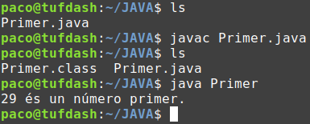
Nosaltres no ho farem així, a mà, sinó que utilitzarem un IDE (Entorn de Desenvolupament Integrat) per a editar, compilar, executar i depurar el nostre programa.
En IntelliJ (i altres IDEs) conforme escrius el codi, ja va indican-te alguns errors que troba (fins i tot no espera a que acabes d'escriure la instrucció). Per a provar el codi, simplement haurem de fer clic en la icona del Play (de color verd). Això ja s'encarrega de guardar els canvis del fitxer, compilar-lo i, si ha anat bé, executar-lo.
3. Dades
Java, a diferència de Python, és un llenguatge de tipificació forta. Això vol dir que haurem de:
- Declarar les variables: indicar el tipus que ha de ser una variable (i que ja no podrà canviar) abans d'usar-la.
- Indicar el tipus de dades que retorna una funció (ja ho veurem).
- Comprovar que els valors que s'assignen a una variable són de tipus compatibles. IntelliJ ho fa automàticament.
3.1. Tipus de dades
Hi ha 8 tipus de dades bàsics en Java:
| Nom | Categoria | Longitud | Rang |
|---|---|---|---|
| boolean | LÒGIC | 1 bit | false, true |
| char | CARÀCTER | 2 bytes | 0 a 2^16 - 1 |
| byte | ENTER | 1 byte | -2^7 a 2^7 - 1 |
| short | ENTER | 2 bytes | -2^15 a 2^15 - 1 |
| int | ENTER | 4 bytes | -2^31 a 2^31 - 1 |
| long | ENTER | 8 bytes | -2^63 a 2^63 - 1 |
| float | REAL | 4 bytes | -2^32 a 2^32 - 1 |
| double | REAL | 8 bytes | -2^300 a 2^300 - 1 |
Notes
- Els valors lògics són true i false (minúscula). En Python eren: True i False.
- Les variables de tipus char només poden contindre 1 caràcter. Requerix 2 bytes, ja que Java no emmagatzema els caràcters en format ASCII, sinó UNICODE. Per tant, en Java podem usar caràcters llatins, grecs, aràbics, ciríl·lics, hebreus i molts més.
- En Python el tipus str podia admetre qualsevol cadena de caràcters però en Java no existe
Com hem dit, les variables deuen ser declarades abans de ser utilitzades (assignar-li un tipus). Amb el tipus aconseguirem acotar el conjunt de valors que admet la variables (domini) i el conjunt d'operacions que podem fer sobre la variable.
Per tant, la informació bàsica que hem de saber d'una variable és:
- Tipus: El tipus bàsic de la variable (char, float...)
- Identificador: El nom amb el qual accedim a la variable
- Valor: La informació que guarda la variable en un moment donat de l'execució del programa
El valor de la variable és opcional: quan es declara una variable, no cal indicar-lo.
Exemples de declaració de variables
Com veiem, al final de cada assignació cal posar un punt i coma. També caldrà posar-lo després de cada instrucció.
3.2. Constants
Una constant és com una variable (té un tipus, un nom i un valor) però amb la condició que el seu contingut (el valor de la variable) no va a canviar al llarg del programa. Per això diem que és una constant i no una variable (no pot variar).
La forma de declarar una constant en Java és indicant-ho amb la paraula final. És a dir, el valor que li posem en eixe moment, és el valor "final" que tindrà:
Per convenció, posarem els noms de les constants tot en majúscules.
Constants en Python
En Python no hi ha possibilitat de definir constants. Malgrat açò, podem trobar-nos codi Python amb variables definides en MAJÚSCULES en un intent del programador perquè la variable siga una constant (o que siga tractada com una), però el seu valor SÍ que es pot canviar, però no es deu. Per tant, podem parlar de Constants per Honor, que encara que el valor es pot canviar, no ho farem.
3.3. Paraules reservades
Estes paraules no podran usar-se per a noms de variables perquè estan reservades:
| abstract | continue | finally | int | public | throw |
| assert | default | float | interface | return | throws |
| boolean | do | for | long | short | transient |
| break | double | goto | native | static | true |
| byte | else | if | new | strictfp | try |
| case | enum | implements | null | super | void |
| catch | extends | import | package | switch | volatile |
| class | false | inner | private | synchronized | this |
| const | final | instanceof | protected | this | while |
4. Operadors
Els operadors de Java són els habituals, però recordem que no són exactament els mateixos que en Python. Ací estan tots, ordenats per prioritat d'execució:
| CATEGORÍA DE L'OPERADOR | OPERADORS PYTHON | OPERADORS JAVA | ASSOCIATIVITAT |
|---|---|---|---|
| Parèntesi, vectors | ( ) [ ] | ( ) [ ] | ESQUERRA |
| Operadors unaris | + - | ++ -- + - | DRETA |
| Potència | ** | DRETA | |
| Multiplicació, divisió i residu | * / // % | * / % | ESQUERRA |
| Suma i resta | + - | + - | ESQUERRA |
| Operadors relacionals | < <= > >= == != <> | < <= > >= == != | ESQUERRA |
| 'No' lògic | not | ! | ESQUERRA |
| 'i' lògic | and | && | ESQUERRA |
| 'o' lògic | or | || | ESQUERRA |
| 'o' exclusiu | ^ | ESQUERRA | |
| Operador condicional | ?: | DRETA | |
| Assignacions | = += -= = *= /= //= %= | = += -= *= /= %= | DRETA |
Vegem els operadors que sí que té Java però no té Python:
4.1. Operador lògic ^
En Java apareix un nou operador lògic (que no té Python) anomenat or-Exclusiu, que es representa per ^. És el mateix que l'operador or però si els 2 operands són true, el resultat és false. És a dir, només val true quan un i només un dels 2 operadors és true. És a dir, seguix la següent taula de veritat:
| x | y | x ^ y |
|---|---|---|
| F | F | F |
| F | V | V |
| V | F | V |
| V | V | F |
4.2. Operadors aritmètics incrementals ++ i --
Els operadors unaris ++ i -- incrementen o decrementenen 1 unitat la variable a qui acompanyen. S'utilitzen molt en Java i C (però no existeixen en Python).
En compte de x++ també haguérem pogut posar ++x, i el resultat seria el mateix. Ara bé, si eixe auto increment està dins d'una expressió, la cosa canvia:
Exemples d'autoincrement dins d'una expressió
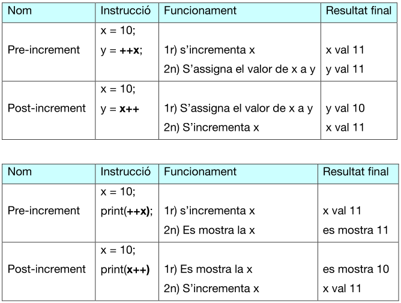
És a dir:
- Si l'operador va davant (++x), primer s'incrementa la variable i després s'utilitza el valor de la variable en l'expressió on apareix.
- Si l'operador va després (x++), primer s'utilitza el valor de la variable en l'expressió i després s'incrementa la variable.
Resumint:
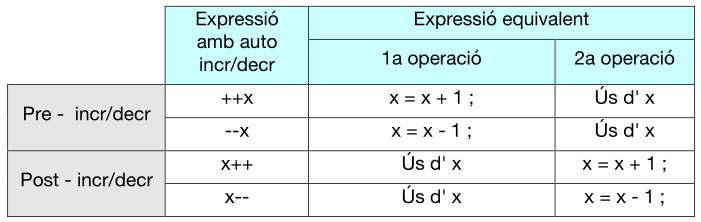
Altre exemple
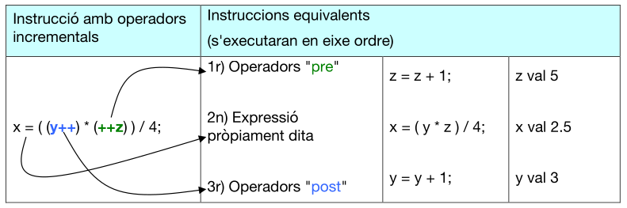
Exercici 1. Operadors aritmètics incrementals
Donades 3 variables enteres a=4, b=5 i c=6, quin valor té cada variable després de cada seqüència d'assignacions?
Exercici 2
Donades 2 variables enteres a=4, b=5, què es mostrarà per pantalla?
4.3. Operador condicional ternari ?:
Sintaxi:
condició ? expressió_true : epressió_false
Exemples d'ús
- Assignar un valor diferent a una variable segons una condició:
- Mostrar un valor diferent segons una condició:
| Java | |
|---|---|
Exercici 3. Operador condicional
Fes un programa que, donades 2 variables enteres, mostre quin és el número més gran i quin el més menut. Millora el programa per a que mostre un número més gran de 3 variables. Usa l'operador condicional ternari.
5. Sortida de dades
5.1. Funcions println i print
En Python la sortida la féiem amb print. EN Java podem fer-ho de 3 formes:
- System.out.println(argument). Mostra per pantalla l'argument que se li passa entre parèntesi, i fa un salt de línia. Se li pot passar tant cadenes (String) com números (i objectes, com vorem més endavant).
- System.out.print(argument) és idèntica a println però sense fer el bot de línia al final. És a dir: println("cadena") és el mateix que print("cadena\n").
- System.out.printf("cadena de control", arg1, arg2, ... argN). Serveix per a especificar un format (quantitat de decimals, quantitat d'espais per a representar un número...). No el vorem.
Exemples
- Si un dels operadors de + és una cadena, en compte de sumar, concatena.
- Si no haguérem posat el parèntesis, concatenaria el valor de la variable i a la cadena de l'esquerra, i després li concatenaria el valor de la variable j. Però el que volem fer és una suma (i + j) i després concatenar eixe resultat a la cadena de l'esquerra.
5.2. Funcions sobrecarregades
La funció println (i print) admet només 1 paràmetre, però pot ser un String o un int, o un float... Això és perquè hi ha moltes funcions println (i print) ja definides. És a dir: moltes funcions amb el mateix nom, però distints tipus de paràmetres. Quan passa això es diu que la funció està sobrecarregada.
Si a l'IDE escrivim System.out.println, automàticament ens mostra les diferents funcions que podem usar:
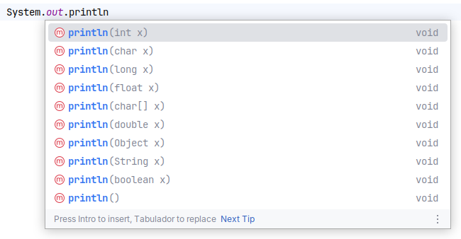
5.3. Travesseres dels IDEs: sout, etc
I cada vegada que vull mostrar una cosa he d¡escriure System.out.println("")? No necessàriament: si en IntelliJ (en Netbeans també) escrivim sout i la tecla del tabulador, automàticament s'escriu el System.out.println(""); i es posa el cursor entre les cometes.
Hi ha moltes altres travesseres en IntelliJ (algunes ja les hem comentades en la introducció del tema), les altres vos convide a investigar-les...
6. Entrada de dades
En Java, per a arreplegar dades de teclat és un poc més complicat que en Python, però no patiu si vos pareix complicat, ja que en la pràctica usarem una funcioneta nostra que ens servirà per a llegir en tot els programes.
Per a llegir de teclat cal usar una classe que ens "unisca" el teclat amb el programa.
Vorem 2 formes de fer-ho: amb la classe Scanner i amb la classe BufferesReader. Les principals diferències són:
| Classe Scanner | Classe BufferedReader | |
|---|---|---|
| Llegir número | Directament | - Llegir cadena - Convertir a número |
| Obliga a tractar possible error | NO | SÍ |
| Cal buidar buffer d'entrada | SÍ | NO |
| introduir decimal per teclat | Amb coma (10,3) però pot ser amb punt si abans posem: teclat.useLocale(Locale.ENGLISH); | Amb punt (10.3) |
6.1. Entrada de dades amb la classe Scanner
Seguirem els següents passos per fer ús de la classe:
1.Importar la classe. Cal afegir açò al principi del programa (fora de la classe):
| Java | |
|---|---|
- Si no ens enrecordem de posar-ho, no passa res, ja que IntelliJ ens avisarà i ho posarà ell sol.
2.Indicar d'on volem llegir les dades (teclat, fitxer...). Cal posar en el main:
| Java | |
|---|---|
- Si no volguérem agafar dades de teclat sinó d'un fitxer, en compte de System.in caldria posar new File("ruta/nomFitxer");
3.Llegir usant els mètodes:
teclat.next(); // Retorna String (només 1 paraula)teclat.nextLine(); // Retorna String (potser n paraules)teclat.nextInt(); // Retorna intteclat.nextFloat(); // Retorna floatteclat.next().charAt(0); // Retorna un char (el primer que s'introduïsca)
Exemple complet de lectura de dades amb la classe Scanner
Exercici 4. Entrada de dades amb la classe Scanner
Fes un programa que demane per teclat les dades d'una venda: nom de l'article, quantes unitats (sense decimals) i el preu (amb decimals). Després ha de mostrar un text com: "4 cerveses a 1.25 la unitat, són 5.00 euros".
Exercici 5
Modifica el programa anterior, fent que primer pregunte les unitats i després el nom de l'article. Quan ho executes voràs que no obtens el resultat esperat. Mira l'apartat següent (buffer d'entrada) i intenta resoldre-ho.
6.1.1. Solució al problema del buffer d'entrada
Tot el que s'introdueix per teclat va guardant-se en un "buffer d'entrada".
Quan usem una funció de lectura de teclat, si en el buffer hi ha alguna cosa, no espera res de teclat sinó que ho agafa del buffer i després ho lleva del buffer.
A vegades convé buidar eixe buffer. Això es fa amb el nextLine() també.
Vegem amb un exemple diferents motius d'haver d'esborrar el buffer.
- Si després de llegir un número volem llegir un text, com en el buffer encara estarà el caràcter de l'intro (\n), la lectura de text agafarà eixe caràcter i no esperarà a llegir res de teclat.
- Si hem posat més paraules , les llevem per a que no les intente agafar una lectura de dades posterior. Si eixa 2a lectura fora lectura de número, donaria error.
- Si volem evitar que quan demanem un número l'usuari pose una lletra, ho podem tractar amb un try-catch (ja ho vorem) i un bucle per a tornar a demanar el número. Però haurem d'esborrar eixa lletra del buffer. Si no, entraria en un bucle infinit sense poder posar res per teclat.
6.2. Entrada de dades amb la classe BufferedReader
Seguirem els següents passos per fer ús de la classe:
1.Importar la classe. Cal afegir açò al principi del programa (fora de la classe):
| Java | |
|---|---|
- Si no ens enrecordem de posar-ho, no passa res, ja que IntelliJ ens avisarà i ho posarà ell sol.
2.Indicar d'on volem llegir les dades (teclat, fitxer...). Cal posar en el main:
| Java | |
|---|---|
- Si no volguérem agafar dades de teclat sinó d'un fitxer, en compte de new Input... caldria posar new FileReader("ruta/nomFitxer");
3.Llegir usant el mètode readLine():
En esta classe, en compte d'haver una funció diferent per a llegir diferents tipus de dades, només hi ha una funció (readLine()) que llig cadenes de text:
| Java | |
|---|---|
Per què try-catch?
El readLine() serveix per a llegir tant teclat com de fitxer. Si ho fem de fitxer pot donar error (si no existeix, no té permisos, etc.). Esta forma de llegir de teclat (amb la classe BufferedReader) obliga al programador a tractar eixe error: cal posar la lectura en un bloc try-catch (ja ho vorem en detall). Si no es fa, el compilador de Java dona error.
Vegem un exemple de lectura de dades amb la classe BufferedReader:
- Si volem llegir de teclat un número enter, cal llegir una cadena de text i després convertir-la a enter.
- El mateix si volem llegir un número float, etc.
Exercici 6. Entrada de dades amb la classe BufferedReader
Fes un programa que demane per teclat les dades d'un pacient: nom, edat, pes (amb decimals) i si és home, dona o altre (h/d/a). A continuació mostra eixes dades en el format que vullgues. Fes la lectura de dades amb la classe BufferedReader. En l'apartat següent pots consultar com llegir de teclat un caràcter amb esta classe.
6.2.1. Conversions de String a un tipus de dades
Com hem vist a l'exemple anterior, Java permet passar un String a un int, float, etc. Això es fa amb el que s'aomena classes de cobertura (o wrapper), les quals tenen funcions (mètodes) per a passar un String al tipus bàsic desitjat de Java. Això ens servirà per si volem capturar de teclat un número, etc. i no un String.
Les classes wrapper existents són:
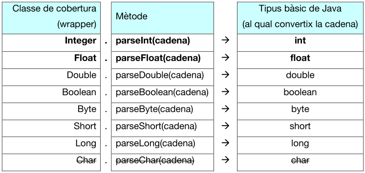
Compte!
No existeix un Char.parseChar() ja que no podem convertir tota una cadena en només 1 caràcter. Si volem llegir de teclat només 1 caràcter, farem com si llegírem una cadena però ens quedarem només en el primer caràcter d'eixa cadena. Això es fa amb el charAt(0), com féiem en la classe Scanner:
6.2.2. Conversions d'un tipus de dades a un String
Suposem que tenim dos variables: cadena de tipus String i numero de tipus int. Podem fer la conversió del número al String de formes diferents:
cadena = "" + numero;cadena = String.valueOf(numero);cadena = Integer.toString(numero); // Float.toString(), Double.toString()...
6.3. Entrada de dades amb les nostres pròpies funcions
Potser ens resulte un poc farragós la lectura de teclat en Java. Per a evitar escriure tant de codi cada vegada que volem llegir alguna cosa de teclat, podem fer-nos una llibreria amb les nostres pròpies funcions (ja vorem com fer-ho en detall).
I en el programa on tenim el main, simplement faríem:
| Proves.java | |
|---|---|
7. Estructures de control
Anem a veure com s'implementen en Java les estructures de control (if, while...) que ja hem vist en Python. En les estructures de control hi ha condicions i blocs d'accions. Recordem que un bloc és un conjunt d'instruccions que depenen d'una condició. Veiem-ho en este exemple de Python, on l'IDE (Visual Studio Code) ens marca amb línies verticals els distints blocs:
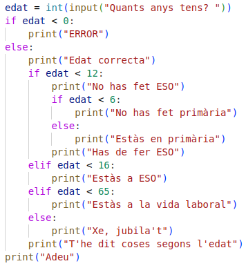
En Java (i C) estes són les diferències respecte a Python per a representar els blocs:
| Python | Java | |
|---|---|---|
| Condició | Amb ":" al final | Entre parèntesis (...) |
| Abast | Sagnat obligatori | Entre claus { } i amb sangnat recomanable |
7.1. Bifurcacions
7.1.1. Bifurcació simple i doble: if / if-else
| Sintaxi de l'if de Java | |
|---|---|
Exemple
Amb este exemple d'if de Java podem vore també com es representen 4 blocs (entre claus):
| Java | |
|---|---|
En aquest exemple, cadascun dels blocs tenen una única instrucció. Per tant, cap de les claus seria obligatòria. Este codi seria equivalent:
Exercici 7. Bifurcacions if-else
Fes un programa que demane per teclat 3 números i que mostre el major.
Exercici 8
Demana una nota amb decimals i mostra el text corresponent: "ins", "suf", "bé", "not" o "exc". O bé "error" si la nota no està entre 0 i 10.
7.1.2. Bifurcació composta: switch
Depenent dels diferents valors d'una variable (o expressió), es podran executar diferents blocs de codi.
Eixa variable o expressió ha de ser de tipus int, char o String.
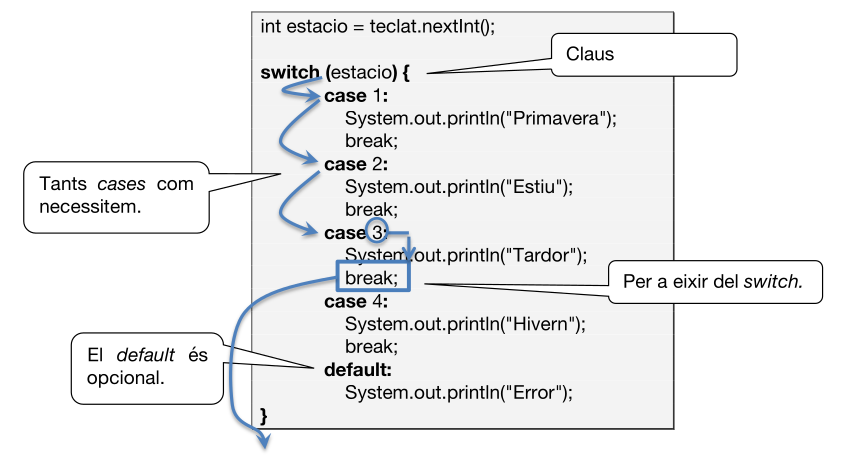
La idea sembla clara: depenent del valor de la variable estacio, s'executarà un trós de codi o un altre.
Per a què serveix un break en un switch?
El funcionament del switch no és exactament "com voldríem". Suposem que no hem posat cap break i que estacio val 3. Per pantalla es mostraria: Tardor, Hivern i Error. És a dir: després d'avaluar-se el que hem posat en el switch (estació), l'intèrpret comprova si el valor correspon el primer case. Si no, amb el segon. Si no, amb el tercer (i així successivament). Si sí que coincideix amb el valor d'un case, s'executarà tot el codi no només d'eixe case, sinó de tots els cases següents, fins trobar un break.
Per tant, si volem que s'execute només el codi corresponent al valor trobat, posarem un break en l'útima instrucció de cada case.
Si l'expressió que s'avalua és un caràcter, els valors que es posen en els case han d'anar entre cometes simples:
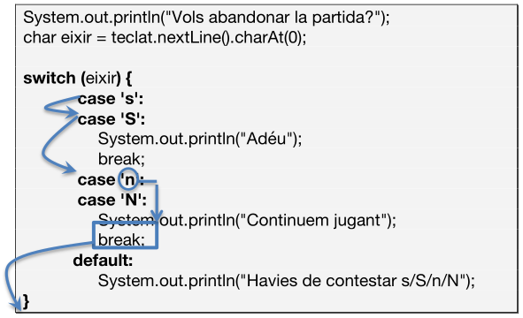
En este exemple veiem que, amb el truquet de no posar el break en la 's', fa que si la variable eixir és una 's', s'execute tot fins trobar un break. És a dir, tant si és 's' com si és 'S', s'executarà el mateix codi. Igual per a la 'n' i 'N'.
I si l'expressió és un String, els valors dels case han d'anar en cometes dobles:
Com veiem, no és necessari el default.
Recordem
Python no té equivalent exacte al switch. Però es podria implementar una cosa semblant usant els elif:
| Python | |
|---|---|
- En el switch de Java s'entrarà en cada cas si es compleix una condició d'igualtat respecte la mateixa expressió. Mentre que en els elif de Python es pot entrar en cada cas si es compleix la condició d'igualtat, de menor, major..., respecte diferents expressions.
Exercici 9. Bifurcacions amb switch
Demana una nota sense decimals i mostra el text corresponent: "ins", "suf", "bé", "not" o "exc". O bé "error" si la nota no està entre 0 i 10. Fes-ho amb un switch. Observa que si fora amb decimals, no es podria fer amb un switch.
Exercici 10
Calculadora. Fes un programa que llija de teclat 2 números i una operació aritmètica. El programa farà el càlcul i imprimirà el resultat. Fes-ho amb un swich.
NOTA: S'admetran els següents caràcters per a cada operació aritmètica:
- Suma: s. S. +
- Resta: r, R, -
- Multiplicació: m, M, *, x
- Divisió: d, D, /
7.2. Bucles
7.2.1. Bucle condicional while
graph LR
B[Codi previ] --> C{Condició while}
C -->|True| D[Codi dins el bucle]
D --> C
C -->|False| F[Sortir del bucle]Sintaxi del while de Java
- Com en Python, també podem posar continue i break dins del bucle, però no existeix la part de l'else de fora del bucle.
EL funcionament és igual que en Python: mentre es complisca la condició es repetiran les accions. Quan el resultat de la condició siga false, acabarà el bucle i continuarà en la següent instrucció.
7.2.2. Bucle condicional do-while
graph LR
A[Codi previ] --> C[Codi dins del bucle]
C --> E{Condició do-while}
E -->|True| C
E -->|False| F[Sortir del bucle]Aquest tipus de bucle no el té Python. També repeteix un tros de codi mentre es compleix una condició però ara primer es fan les accions i després es comprova si torna a entrar:
La seua sintaxi en Java és:
- Primer s'executen les accions
- Després es comprova si es tornen a repetir les accions
Per tant, en el while "normal" potser no s'executen mai les accions de dins del bucle (si des d'un principi ja no es complira la condició), mentre que en el do-while, segur que sempre es van a executar les accions, almenys 1 vegada.
Atenció!
Tots els problemes de bucles poden fer-se amb while o amb do-while, encara que potser una de les dos és més idònia. Fes els següents exercicis de 2 formes distintes (amb while i amb do-while) i pensa quina de les 2 és la més idònia en cada exercici.
Exercici 11
Programa que demane un número i, a continuació, que demane contínuament quin és el quadrat d'eixe número fins que siga encertat.
Exercici 12
Programa que vaja demanant les notes que ha tret l'alumnat fins que s'introduïsca una nota -1. En acabant, que mostre la nota mitja, quantes notes estan aprovades i quantes suspeses (el número -1 introduït no comptarà per a les estadístiques, clar).
Informació
Estos exercicis següents es faran millor amb un bucle incondicional (for) però intenta fer-los amb bucles condicionals.
Exercici 13
Programa que mostre els números del 10 al 20.
Exercici 14
Programa que mostre els números del 20 a 10, de 3 en 3.
7.2.3. Bucle incondicional for
A l'explicació del for de Python del tema anterior veiérem l'exemple de recórrer els números de l'1 al 9. Veiem ara com seria en Java (i C):
Mostrar els números de l'1 al 9 (un en cada línia)
Veiem que són 3 apartats, separats per punt i coma:
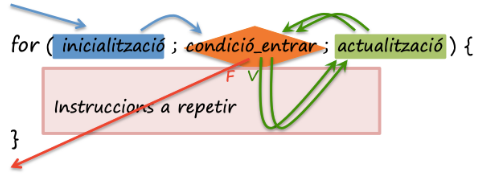
On tenim que:
- Inicialització: Instrucció (o instruccions separades per coma) que s'executaran només abans de la primera iteració del for (i abans d'avaluar la condició). Sol usar-se per a inicialitzar la variable que fa de comptador.
- Condició: Si es compleix la condició (que pot ser composta), s'executaran les sentències de dins del for. Si no es compleix, eixirem del for.
- Actualització: Instrucció (o instruccions separades per coma) que s'executaran després d'executar les sentències de dins del for. A continuació, torna a avaluar-se la condició.
És a dir, un possible flux seria:
- Inicialització
- Condició true --> sentències --> actualització
- Condició true --> sentències --> actualització
- Condició true --> sentències --> actualització
- ...
- Condició false --> El bucle acaba
Altres exemples:
Exemple incremental
Mostra els números del 10 al 30, de 5 en 5:
- Mostrarà els números: 10, 15, 20, 25, 30
Exemple amb decrement
Mostra els números del 10 al 4 en ordre descendent:
- Mostrarà els números: 10, 9, 8, 7, 6, 5, 4
Fixa't que, com ara el comptador "va cap arrere", la i no s'incrementa (i++) sinó que es decrementa (i--). I la condició no és menor (<), sinó major (>).
Exemple de bucle infinit (que cal evitar, clar)
- Compte! Això mostrarà els números: 1, 4, 7, 10, 13, 16, 19, 22... Fins a l'infinit!
Cal anar en compte en la condició. En este cas, per molt que incrementem la variable i, sempre es complirà que i és distint de 9. Per tant, es genera el que s'anomena bucle infinit.
Exercicis sobre bucles infinits
Com ja hem vist, els bucles incondicionals (for) són més adequats quan sabem quantes vegades s'ha de repetir unes sentències, mentre que els condicionals (while, do-while) són més adequats quan depenen d'una condició que no sabem quan es complirà. No obstant, qualsevol bucle pot implementar-se de les 3 maneres.
Fes en Java els exercicis següents amb bucles for (i, si vols, intenta també fer-los amb bucles condicionals). Són els mateixos que ja férem en Python 
Exercici 15
Programa que demane una taula de multiplicar i la mostre
Exercici 16
Programa que calcule el màxim de 10 números introduïts per teclat
Exercici 17
Programa que calcule el màxim, mínim i mitjana de 10 números entrats per teclat
Exercici 18
Programa que mostre les taules de multiplicar del 2 al 9
Exercici 19
Programa que calcule el factorial d'un nñumero introduït per teclat (n!) tenint en compte que:
- 0! = 1
- n! = n * (n-1) * (n-2) * ... * 2 * 1 (sent n>1)
Feu-ho amb diferents solucions:
- Amb un for recorrent els números des de l'1 fins n
- Amb un for recorrent els números des d'n fins a 1
- Amb un while recorrent els números des de l'1 fins n
- Amb un while recorrent els números des d'n fins a 1
8. Tractament d'excepcions
Una excepció és un error que pot avortar un programa. Cada error que es produeix és un objecte de la classe Exception (ja vorem això de classes i objectes).
Com hi ha molts tipus d'errors, hi ha moltes classes d'Exceptions. De fet, hi ha una jerarquia d'excepcions. Ací hi ha una xicoteta mostra de les més freqüents:
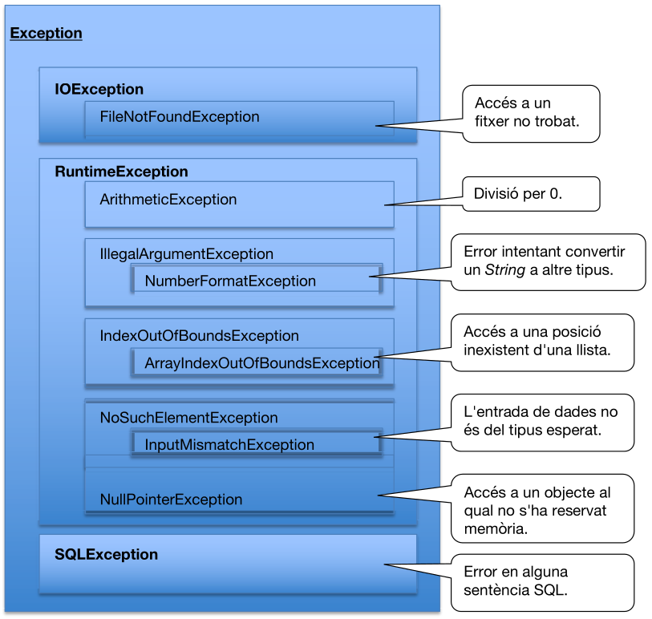
Si volem "capturar" un error i tractar-lo sense que avorte el programa, ho podem fer amb blocs try-catch-finally:
Sintaxi:
- Si dona error en alguna instrucció, no s'executaran les següents d'este bloc
- Tants catch com tipus d'error volem capturar. S'executarà el bloc corresponent a l'error produït
- Si ha hagut un error no capturat, després d'executar el finally el programa avortarà i, per tant, estes instruccions no s'executaran
Exemple de tractament d'excepcions
Més endavant vorem com propagar excepcions o crear les nostres pròpies excepcions i llençar-les.
Exercici 20
Fixa't en el següent programa i contesta les preguntes:
- Què mostrarà per pantalla si per teclat introduïm el 2?
- Què mostrarà per pantalla si per teclat introduïm el 0?
- Què mostrarà per pantalla si per teclat introduïm lletres?
9. Comentaris
Els comentaris s'utilitzen per a explicar (al mateix programador, no a l'usuari final) alguna part del programa. Per exemple, servixen per a explicar el significat d'alguna variable o indicar a principi del programa l'autor del programa, data de creació...
El compilador no analitza les línies comentades. Simplement, passa d'elles.
En Java podem incloure comentaris als nostres programaes de 3 formes diferents:
9.1. Comentaris d'una línia
A partir de la combinació de caràcters //
| Java | |
|---|---|
9.2. Comentari de diverses línies
Per a comentar grans blocs. Es considera comentari tot allò que queda entre /* i */
| Java | |
|---|---|
9.3. Javadoc
Comentaris per a documentació de Java. Sol servir per a documentar funcions (ja les vorem). Tot allò que estiga entre /** i */
Exemple de Javadoc
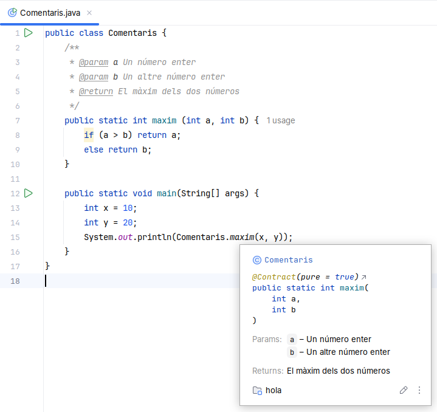
Una volta documentat amb el Javadoc, si el programador escriu el nom de la funció, apareixerà l'ajuda de la informació que li hem posat, amb una estètica estàndard.
10. Exercicis
Exercici 21
Què valdran les següents expressions?
(x>=0)||(x<0)(x==y)||(x!=y)(x==y)^(x!=y)(4>3)^(3<4)
Exercici 22
Programa que demane per teclat una quantitat (entera) d'euros i el desglosse en bitllets (els mínims possibles) i monedes d'1 euro. Per exemple, si tenim 1397 euros:
- 2 Bitllets de 500
- 1 Bitllets de 200
- 1 Bitllets de 100
- 1 Bitllets de 50
- 2 Bitllets de 20
- 0 Bitllets de 10
- 1 Bitllets de 5
- 2 Monedes d'1 euro
Exercici 23
Programa que demane 10 números per teclat. En acabant, caldrà mostrar un missatge dient si s'ha introduït algun número negatiu o si no. A més, es mostrarà la quantitat de números parells i la quantitat d'imparells.
Exercici 24
Demana 2 números i calcula la potència (el primer elevat al segon) amb un bucle. En acabant mostra-la. Compte amb els exponents negatius!
Exercici 25
Programa d'endevinar un número. L'usuari pensa un número de l'1 al 100. L'ordinador ha d'endevinar-lo. L'usuari anirà indicant si el número a encertar és major o menor que el que ha dit, fins que siga encertat.
Exercici 26
Altre programa d'endevinar un número. L'ordinador tria un número de l'1 al 100 (busca a Internet una funció que calcule un número aleatori en Java). L'usuari ha d'intentar endevinar-lo amb els missatges que vaja dient l'ordinador de si el número és major o menor del que ha dit l'usuari.
11. Annex I: funcionsIO.java
Per tal de facilitar l'entrada i la sortida, hem creat un fitxer de funcions útils que podeu emprar als vostres programes. Algunes de les solucions de les activitats anteriors faran referència a les funcions contingudes en aquest fitxer. Per emprar-lo, sols heu de emmagatzermar-lo a la mateixa carpeta on teniu els codis font dels vostres programes.
12. Annex II: Gestió i format de dates
A continuació, explicarem com es poden manipular i convertir objectes entre String i java.util.Date fent ús de la classe SimpleDateFormat de Java. Aquesta classe permet treballar amb dates i formats en un context llegible i fàcil d'entendre:
La classe SimpleDateFormat és una subclasse de DateFormat que permet donar format i analitzar dates segons un patró (pattern). Això resulta útil per convertir String a Date o viceversa.
12.1. Conversió de String a Date
Quan es té una data com a cadena (String) i es vol convertir a un objecte Date, es fa mitjançant el mètode parse().
Exemple d'ús
- String que actúa com a patró o màscara, per definir el format de data rebut/desitjat.
Passos clau:
- Definir el patró de format (
dd/MM/yyyy,yyyy-MM-dd, etc.). - Crear una instància de
SimpleDateFormatamb el patró. - Utilitzar el mètode
parse()per convertir la cadena a un objecteDate.
12.2. Conversió de Date a String
Quan es vol convertir un objecte Date a String, s’utilitza el mètode format().
Exemple d'ús
Passos clau:
- Definir el patró de format que es vol per la cadena.
- Crear una instància de
SimpleDateFormatamb aquest patró. - Utilitzar el mètode
format()per obtenir una representació de la data com a cadena.
12.3. Patrons comuns
Els patrons de SimpleDateFormat permeten definir com es vol mostrar la data i hora. Alguns exemples de patrons són:
| Patró | Exemple | Descripció |
|---|---|---|
dd/MM/yyyy |
20/11/2024 |
Dia/Mes/Any (format europeu) |
yyyy-MM-dd |
2024-11-20 |
Any-Mes-Dia (format ISO 8601) |
dd-MMM-yyyy |
20-Nov-2024 |
Dia-Mes-Abreviat-Any |
EEEE, dd MMMM yyyy |
Dijous, 20 Novembre 2024 |
Nom complet del dia i del mes |
HH:mm:ss |
14:35:50 |
Hora-Minuts-Segons (format 24 hores) |
hh:mm:ss a |
02:35:50 PM |
Hora-Minuts-Segons (12 hores amb AM/PM) |
yyyy.MM.dd G 'at' HH:mm:ss z |
2024.11.20 AD at 14:35:50 CET |
Any.Mes.Dia Era a Hora:Minuts:Segons Zona |
E, MMM dd yyyy |
Thu, Nov 20 2024 |
Dia setmana abreviat, Mes abreviat, Any |
12.4. Gestionar excepcions
És important tenir en compte que el mètode parse() pot llançar una excepció (ParseException) si el format de la cadena no coincideix amb el patró definit.
| Java | |
|---|---|
Exercici 27 RESOLT
Crea un programa Java que realitze les següents accions:
- Entrada de l’usuari: L'usuari introdueix una data en format
dd/MM/yyyy. - Conversió de String a Date:
- El programa converteix la data introduïda a un objecte Date.
- Conversió de Date a String:
- El programa converteix l'objecte Date a una cadena en format
EEEE, dd MMMM yyyy(per exemple, "Thursday, 20 November 2024").
- El programa converteix l'objecte Date a una cadena en format
- Mostra la data en el nou format.